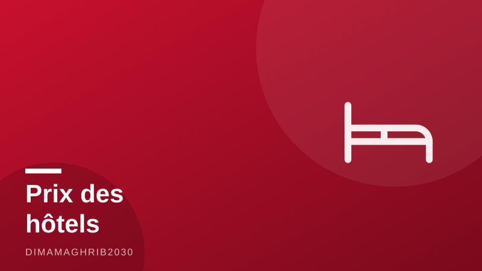

Été 2026 : pourquoi les prix des hôtels flambent au Maroc — et ce que révèle l'étude du ministèreMorocco's Two-Speed Summer: Hotel Prices Soar as the Kingdom Bets on Quality Over Quantity

À Marrakech, les terrasses des riads affichent complet. À Agadir, les resorts en front de mer n'ont jamais été aussi chers. Et pourtant, à Casablanca, certains hôtels bradent encore leurs chambres pour remplir leurs étages. Bienvenue dans l'été marocain à deux vitesses — une saison record qui pose une question devenue inévitable dans les agences de voyage d'Europe et d'ailleurs : pourquoi le Maroc est cher en 2026 ?
Les chiffres, d'abord, donnent le vertige. Selon Travel Daily News, le royaume a accueilli 7,7 millions de visiteurs internationaux entre janvier et mai 2026, soit une progression de 7 % sur un an — et le seul mois de mai a bondi de 13 %. Côté recettes, le média MCG24 rapporte que les revenus du voyage atteignaient déjà 44,39 milliards de dirhams à fin avril. La destination ne s'est jamais aussi bien portée. Mais cette réussite a un prix, au sens propre.
Ce que dit vraiment l'étude du ministère
Face à la grogne montante sur les tarifs hôteliers de juillet 2026, le ministère du Tourisme a publié une étude comparative des prix pratiqués ce mois-ci dans les grandes destinations du pays. Sa conclusion, relayée par LesEco.ma et le Journal du Canada, prend le contre-pied du débat ambiant : le vrai problème n'est pas tant le niveau des prix que l'insuffisance de l'offre. Autrement dit, quand la demande explose et que les lits manquent, les tarifs grimpent mécaniquement — et la réponse ne peut pas être un simple plafonnement.
Dans la foulée, la tutelle assume un changement de doctrine désormais officiel : passer « de la quantité à la qualité ». Le débat sur le tourisme au Maroc entre qualité et quantité n'est plus une querelle d'experts ; c'est la nouvelle ligne stratégique du royaume, la stratégie touristique du Maroc pour 2026 et au-delà.
Un royaume, deux marchés
Sur le terrain, cette bascule ne se fait pas partout au même rythme. D'après Premiumtravelnews, dans une analyse publiée le 22 juillet, la croissance du premier semestre 2026 s'est répartie de manière très inégale. Marrakech, Agadir, Tanger et Fès montent résolument en gamme, portées par une clientèle internationale prête à payer pour l'expérience. Casablanca et Rabat, en revanche, continuent de casser les prix selon les saisons pour remplir des établissements pensés d'abord pour la clientèle d'affaires.
Résultat : le voyageur qui compare les prix des hôtels au Maroc pour l'été 2026 découvre deux pays en un. Un Maroc premium, où le riad cinq étoiles de la médina se négocie à des tarifs dignes de la Méditerranée nord, et un Maroc de bonnes affaires, à une heure de train, où les promotions estivales restent la norme.
La fin du tourisme bas coût ?
C'est la question qui agite tour-opérateurs, agences réceptives et hôteliers depuis que Premiumtravelnews l'a posée frontalement le 17 juillet : le Maroc est-il en train de tourner la page du tourisme low-cost ? Les partisans de la fin du tourisme bas coût au Maroc y voient une maturité assumée — mieux vaut moins de visiteurs qui dépensent plus, dans des hôtels rénovés et des expériences authentiques. Les sceptiques rappellent que le low-cost a bâti la notoriété de la destination et redoutent de perdre les familles et les jeunes voyageurs au profit de la Turquie ou de l'Égypte.
Entre les deux, l'étude du ministère trace une troisième voie : construire, tout simplement. Plus de chambres, plus de capacité, pour que la montée en gamme ne rime pas avec exclusion. À l'horizon de la Coupe du monde 2030, c'est peut-être là que se jouera le vrai match de l'hôtellerie marocaine.
In Marrakech, the rooftop riads are fully booked. In Agadir, beachfront resorts have never charged more. Yet an hour up the coast in Casablanca, hotels are still slashing rates to fill rooms. Welcome to Morocco's two-speed summer — a record-breaking season that has travelers across Europe and North America asking the same question: why is Morocco summer 2026 so expensive?
The numbers behind the boom are striking. According to Travel Daily News, the kingdom welcomed 7.7 million international visitors between January and May 2026, up 7 percent year on year — with May alone surging 13 percent. On the revenue side, MCG24 reports that travel receipts had already reached 44.39 billion dirhams by the end of April. The destination has never performed better. But that success now comes with a sticker price.
What the Ministry's Study Actually Found
With complaints mounting over Morocco hotel prices in 2026, the Ministry of Tourism published a comparative study of hotel rates across the country's major destinations this July. Its conclusion, reported by LesEco.ma and Journal du Canada, cuts against the popular narrative: the real problem is not the price level itself but insufficient supply. When demand explodes and beds are scarce, rates climb mechanically — and the answer, the ministry argues, cannot be a simple price cap.
Alongside the study, the government made official what insiders had sensed for months: a strategic pivot from quantity to quality. What was once a debate among consultants is now the stated Morocco tourism strategy for 2026 and beyond — fewer bargain-basement packages, more investment in upscale capacity and premium experiences.
One Kingdom, Two Markets
On the ground, the shift is anything but uniform. In an analysis published July 22, Premiumtravelnews found that first-half growth in 2026 has been unevenly distributed. Marrakech, Agadir, Tangier and Fez are moving decisively upmarket, buoyed by international travelers willing to pay for the experience. Casablanca and Rabat, by contrast, still cut prices seasonally to fill properties built primarily around business travel.
The result is a country that looks radically different depending on where you search. Compare July hotel rates across cities and you find a premium Morocco, where a five-star riad in the medina now commands northern-Mediterranean prices, and a bargain Morocco, a short train ride away, where summer promotions remain the norm. For visitors, that split is either a frustration or an opportunity — often both.
The End of Low-Cost Morocco?
The bigger question is the one Premiumtravelnews put bluntly to the industry on July 17: is Morocco turning the page on low-cost tourism? Among tour operators, destination management companies and hoteliers, the debate is live and sometimes heated. Advocates of the upmarket turn see it as overdue maturity — better to host fewer visitors who spend more, in renovated hotels offering genuine experiences, than to compete on price forever. Skeptics counter that budget travel built Morocco's global reputation in the first place, and warn that pricing out families and younger travelers risks handing them to Turkey or Egypt.
Between those camps, the ministry's study sketches a third path: simply build more. More rooms, more capacity, so that going upmarket does not mean shutting people out. With the 2030 World Cup on the horizon and demand showing no sign of cooling, that construction race — not this summer's price debate — may be where Morocco's tourism future is really decided.